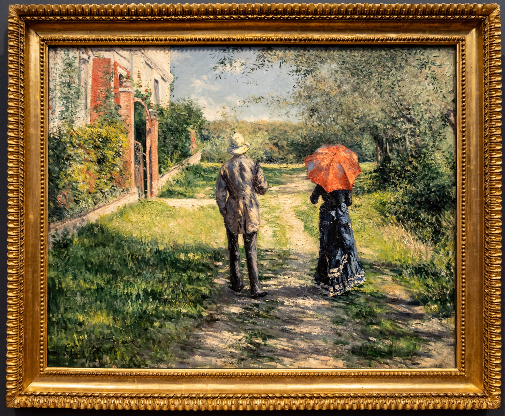

Гюстав Кайботт
Chemin montant (Восходящая дорога), 1881

Холст, масло, 99,6 x 125,2 см
Частная коллекция.
Происхождение
Выполненная в 1881 году, данная работа является бесспорным шедевром в карьере Кайботта. Картина, изображающая модную буржуазную пару, прогуливающуюся по зелёной деревенской дорожке, представляет собой сложный синтез, состоящий из двух компонентов творчества художника. Это городские образы, которые автор создавал с 1870 года, и пейзажи садов следующего десятилетия. Уходящая вдаль дорожка разделяет картину на две части: архитектурное строение слева и дикая растительность справа. Кайботт не определил местонахождение этой сцены. Хотя весной 1881 года художник купил дом в Пети-Женвилье, картина не иллюстрирует окрестности Парижа. Превосходная вилла в левой части предполагает морской курорт на побережье Нормандии, где Кайботт проводил летом несколько недель в период между 1880 и 1884 годами в связи с его участием в морских регатах. В это время он написал удивительно своеобразные пейзажи, изображающие роскошные виллы на побережье между Виллер и Виллервиль. С ними прослеживается сходство в низенькой ограде, арочных воротах, треугольных фронтонах над окнами. Годы, проведённые в Нормандии, были очень плодотворны для Кайботта. Между 1880 и 1884 годами он написал не менее пятидесяти полотен Трувиля и окружающих его окрестностей. В отличие от Будена и Моне, чьи взгляды были сосредоточены в основном на модном обществе городских отдыхающих, Кайботт был покорён прежде всего пейзажами. В более ранних работах художника присутствует эффект фотографии, но эта работа выполнена полностью в манере импрессионизма. Видимые мазки кистью предполагают движение лёгкого ветерка через пышную листву, игра света и тени вызывают кажущиеся вибрации пейзажа под летним солнцем. Интенсивность палитры также поражает. Глубокий сине-фиолетовый оттенок женского платья контрастирует с бежевыми, зелёными и голубовато-серыми тонами пейзажа, в то время как блестящие розовые акценты подчеркивают ключевые цвета композиции. Примечательной особенностью картины является таинственная связь между двумя фигурами, изображенными со спины, анонимно, как художник часто использовал в своих картинах. Мужчина одет в костюм для катания на лодках, женщина - в модном платье парижанки. Она держит зонтик, незаменимый атрибут благовоспитанных женщин. Фигуры расположены на расстоянии друг от друга, и эта дистанция подчеркивается садовой дорожкой между ними. Есть предположение, что на картине изображены сам Кайботт и его подруга Шарлотта Бертье. Моделью для мужской фигуры также мог быть брат художника Марсиаль. Впервые картина была представлена на седьмой выставке Салона Независимых в 1882 году, а затем исчезла из поля зрения публики. Долгое время существование картины было известно искусствоведам только по документированному перечню произведений выставки 1882 года. Повторное открытие полотна в 1994 году знаменует собой важное событие в изучении творчества Кайботта и истории импрессионизма.